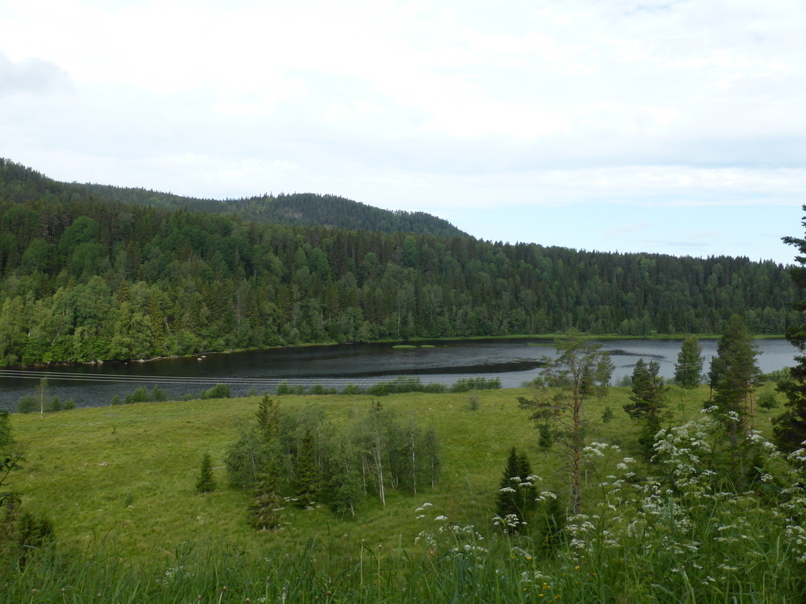
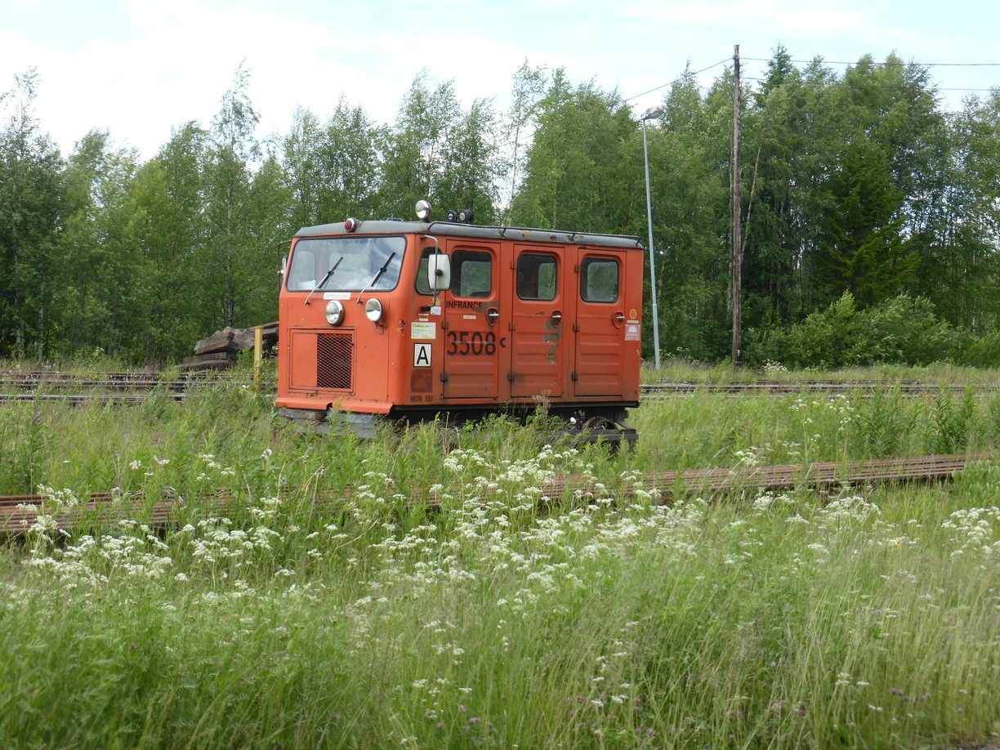
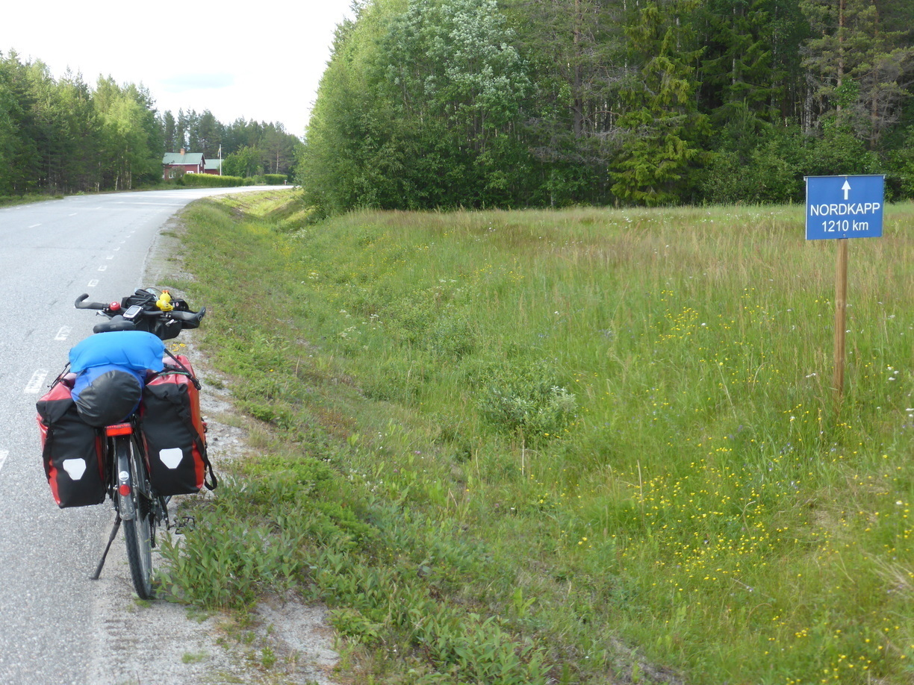
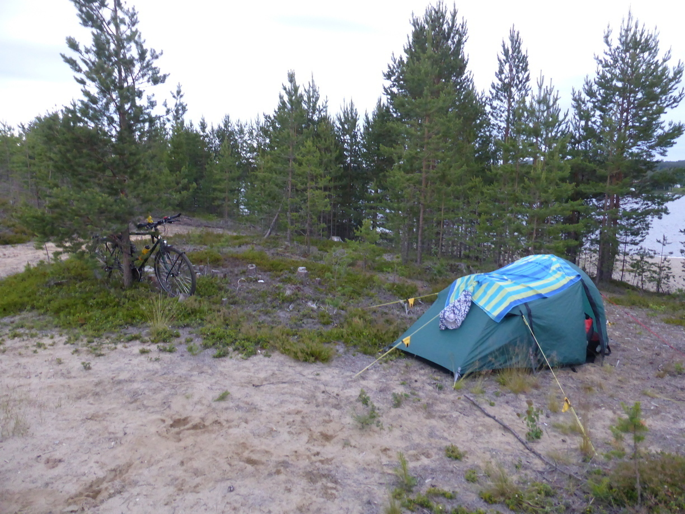
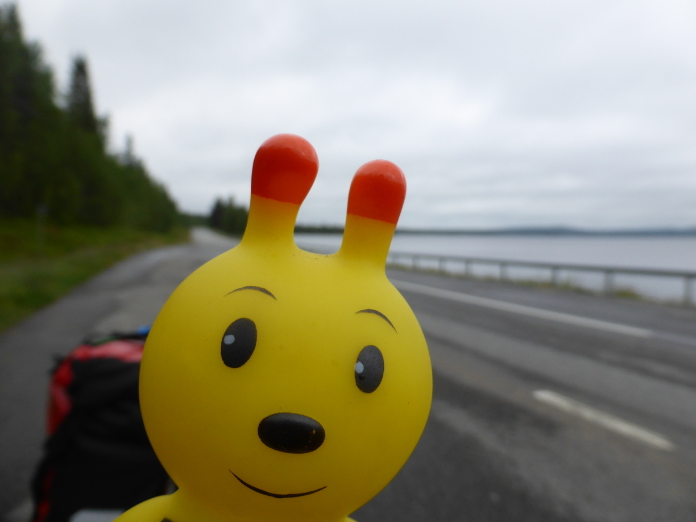

Lappland
Tag 33
Västertorp - Ramsele 100 km
Mittlerweile war ich so weit nördlich, dass die Auswahl an asphaltierten Straßen langsam nachließ. Somit ging es fast den ganzen Tag entlang der selben Straße.

Tag 34
Ramsele - Åsele 121 km
Am Waldrand gab es viel zu entdecken.
ausgebrannte Volvos
Elche
 
In Åsele war ich zunächst an der falschen Seite des Sees. Konnte aber dann doch den Badplats finden. Dort hatte ich ein paar nette Schweizer als Nachbarn. Zudem gab es auch noch fließend Wasser.
Tag 35
Åsele - Hedlunda 103 km
Na wer kann alle Fahnen korrekt zuordnen?
In Hedlunda hab ich am Badplats neben dem Flughafen gezeltet. Das Zelt aufzubauen war nicht einfach, da es sehr sandig und windig war. 
Tag 36
Hedlunda - Norsjö 99 km
Heute ist es schon wieder passiert. Als ich an einem Badplats hielt viel mir auf, dass die Jacke, die ich vorne auf die Tasche geschnallt hatte verloren gegangen war. Erst ein Bündel Bananen, dann das Fahrradschloß und nun das. Diesmal bin ich sogar bis zu der Stelle zurück gefahren, wo ich das letzte Mal Pause gemacht hatte. Als ich dort an kam fing es an zu Regnen. Leider konnte ich die Jacke nicht finden und da ich zwischendurch bereits 2 mal vor dem Regen Unterschlupf suchen musste fuhr ich bei der nächsten Regenpause weiter. Es blieb den gesamten restlichen Weg immerhin trocken. Erst als ich gerade mit dem Zeltaufbau began fing es wieder an. 
Am Abend konnte ich immerhin am Campingplatz im Gemeinschaftsraum sitzen und den Blog aktualisieren.